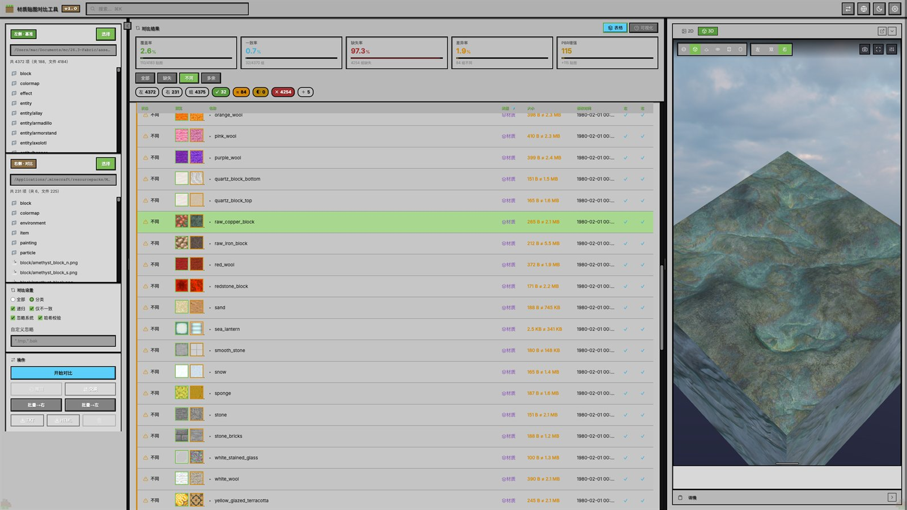

What it does
功能
文件夹对比
选择左右两个文件夹，按文件名逐一比对，支持递归子目录与 MD5 校验。
- 五种状态：一致 / 内容不同 / 部分缺失 / 右侧缺失 / 右侧多余
- 忽略规则：系统文件 + 自定义通配符
- 搜索、按状态过滤、多字段排序
贴图后缀识别
按后缀把文件归为主贴图、法线贴图与高光贴图三类。
_n→ 法线贴图_s→ 高光贴图（LabPBR：R 粗糙度 / G 金属度 / B 自发光 / A 掩膜）
3D 材质预览
基于 Three.js 的实时 PBR 渲染。
- 几何体：球体、立方体、平面、圆环、圆柱、胶囊
- PBR 参数：金属度、粗糙度、法线强度、自发光
- 视差遮挡映射（POM），可从法线 alpha 通道取高度图
- 五种光照预设 + HDR 环境贴图（.hdr / .exr）
- 透明度模式：cutout / blend / glass
文件操作
对差异文件直接处理，无需切换到系统文件管理器。
- 复制 / 备份 / 删除、批量同步到左或右侧
- 撤销操作、在系统文件管理器中打开
- 对比结果导出为 HTML
- 深色 / 浅色主题，窗口配置持久化
Get it
下载与安装
需要 Node.js 环境
方式一：从源码运行
git clone https://github.com/xiongmiaozai/matoga.git
cd matoga
npm install
npm start开发模式（自动打开 DevTools）：npm run dev
方式二：下载压缩包
项目仓库的 releases 目录内有三个平台的压缩包（约 13 MB）：
- 打开 releases 目录
- Windows / macOS / Linux 各一个 zip
压缩包内为源码，解开后同样需要 npm install。
项目信息：技术栈 Electron 31 + Three.js 0.186 + 原生 JavaScript（无构建工具）。
采用 MIT License。按作者要求，使用本项目时需保留并标明
作者：芝世（xiongmiaozai） 与
来源地址。